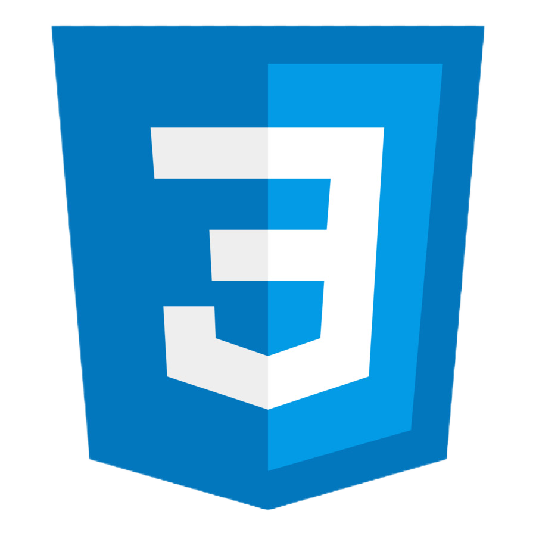
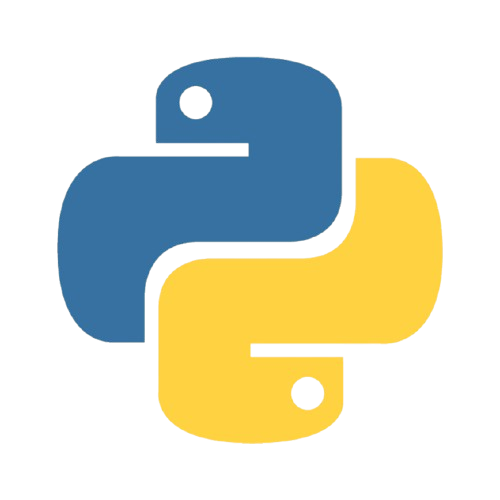

HABILIDADES

HTML

CSS
JAVA SCRIPT

Estudante de Análise e Desenvolvimento de Sistemas, sempre tive uma grande paixão pela área de tecnologia e estou sempre em busca de novos desafios que possam agregar ao meu conhecimento e desenvolvimento profissional.
Servi 3 anos à Marinha do Brasil no corpo de Fuzileiros Navais, tendo comigo o aprendizado de hierarquia e disciplina e costumes militares. Atuei a maior parte da minha trajetória na Seção de Pessoal do Batalhão, onde tive responsabilidade pelos demais soldados do setor.
Estagiário no COPPEAD UFRJ, atuando na área de infraestrutura de redes e suporte. Participei na gerência e organização dos servidores AD (Active Directory), realizei limpeza, formatação e manutenção nos computadores, mapeando redes, atendimento ao usuário e configuração de softwares.
Tenho perfil proativo, sou detalhista e gosto de trabalhar em equipe, sempre buscando soluções eficientes e inovadoras para os problemas. Além disso, possuo boas habilidades de comunicação, o que facilita o trabalho colaborativo e a interação com diferentes áreas dentro de um projeto.

